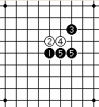

2008年北京首届联赛（天王赛）于4月12日终于开战了。本想先找个软的对手碰碰运气，同时给自己打打气，但已与马世卫有约在先。我与马世卫是很久的五子棋朋友了，我们上一盘交手还是1999年在世锦赛期间共同参与组织比赛时在宿舍中进行的，再度手谈，也是我们期待已久的。
猜先，老马开局，疏星，真烦，就不能开点新鲜的呀？幸亏出门前我大概看了看疏星的开局几手变化，我认为疏星虽然是白棋稍优势的棋型，但变化选择的主动权还是在黑5，因此我选择了交换，并给出黑5的两个打点，以求稳为上策。
老马给我留下正常的二打，却没有老老实实地走白6，故意反向活三主动求变，这种变化我是见过的，但并不很熟悉，由于我比赛经验缺乏，很难静下心来想棋。好在多年录谱，棋感也还是有些的。
黑7挡哪端都很强，我选择了正常的白6点。白8最强防。黑11盖冲，黑13向下斜活三。黑15斜跳三强攻，过于急燥，白16反斜活三，黑17冲四，黑19反跳三，白20先冲四，白22反斜跳三，几手棋交换下来，谁也没有占到便宜。黑23正确的防守应是挡在下端a点，黑棋稍占优势。
黑23在求稳的思想主导下于b点阻断。白24做棋准备抓禁手。黑25抢先斜活三，黑27做棋，右下的局面是黑棋的优势，有机会再做一手就是胜棋了，但24-14两子还是有一些威胁的，必须想办法先解决掉。此时的棋形紧紧抱在一起，给我的感觉很不舒展，此时我长长地出了一口气，很想做一做广播体操的伸展运动。
【原文发表于中国连珠网】